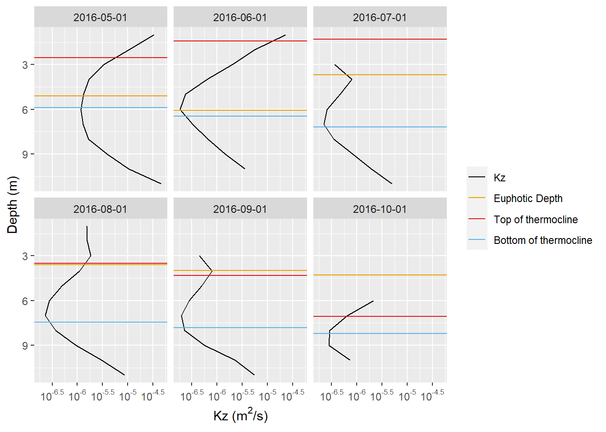
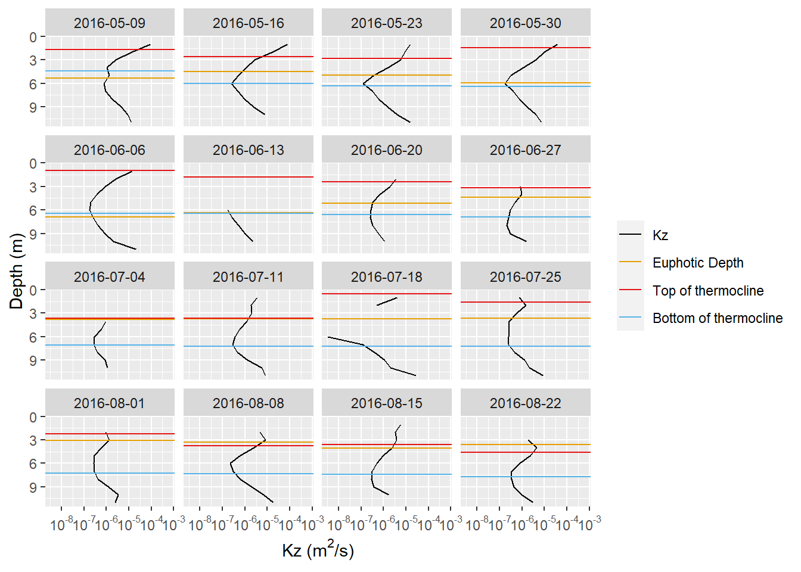

Last updated: 2022-02-04
Checks: 7 0
Knit directory: vertMixing_workFlow/
This reproducible R Markdown analysis was created with workflowr (version 1.7.0). The Checks tab describes the reproducibility checks that were applied when the results were created. The Past versions tab lists the development history.
Great! Since the R Markdown file has been committed to the Git repository, you know the exact version of the code that produced these results.
Great job! The global environment was empty. Objects defined in the global environment can affect the analysis in your R Markdown file in unknown ways. For reproduciblity it’s best to always run the code in an empty environment.
The command set.seed(20220203) was run prior to running the code in the R Markdown file. Setting a seed ensures that any results that rely on randomness, e.g. subsampling or permutations, are reproducible.
Great job! Recording the operating system, R version, and package versions is critical for reproducibility.
Nice! There were no cached chunks for this analysis, so you can be confident that you successfully produced the results during this run.
Great job! Using relative paths to the files within your workflowr project makes it easier to run your code on other machines.
Great! You are using Git for version control. Tracking code development and connecting the code version to the results is critical for reproducibility.
The results in this page were generated with repository version ab9981a. See the Past versions tab to see a history of the changes made to the R Markdown and HTML files.
Note that you need to be careful to ensure that all relevant files for the analysis have been committed to Git prior to generating the results (you can use wflow_publish or wflow_git_commit). workflowr only checks the R Markdown file, but you know if there are other scripts or data files that it depends on. Below is the status of the Git repository when the results were generated:
Ignored files:
Ignored: data/BLEL_Light.csv
Ignored: data/BLEL_Secchi.csv
Ignored: data/LTM_chem.csv
Ignored: data/Supporting_Light.docx
Ignored: data/WT_total.csv
Ignored: data/bathy.csv
Ignored: data/blelham_bathy.xlsx
Note that any generated files, e.g. HTML, png, CSS, etc., are not included in this status report because it is ok for generated content to have uncommitted changes.
These are the previous versions of the repository in which changes were made to the R Markdown (analysis/vert_Mixing_Blelham.Rmd) and HTML (docs/vert_Mixing_Blelham.html) files. If you’ve configured a remote Git repository (see ?wflow_git_remote), click on the hyperlinks in the table below to view the files as they were in that past version.
| File | Version | Author | Date | Message |
|---|---|---|---|---|
| Rmd | ab9981a | Dan-ub | 2022-02-04 | added weekly plots and corrected data pathname |
| html | 507bec8 | Daniel | 2022-02-03 | Build site. |
| Rmd | 8f17f01 | Daniel | 2022-02-03 | added more Kz calcs from my original code |
| html | 9f7e7c7 | Daniel | 2022-02-03 | Build site. |
| Rmd | d5fe2c9 | Daniel | 2022-02-03 | added analysis file with some blelham calculations |
Just going to see if I can run some of my vertical mixing code on this website.
Many of the vertical mixing functions used are defined in analysis/vert_mixing_functions.R. I will try to mention which these are.
Load functions:
source('analysis/vert_mixing_functions.R')Note that raw data will not be uploaded to Github. However, graphs produced from this data will appear on this website (need to do some thinking about data acknowledgement and licensing as this website is public)
############## READ DATA ################
waterDF = read.csv("data/WT_total.csv")
waterDF_dt <- waterDF %>%
mutate(DateTime=dmy_hm(DateTime)) %>%
rename(datetime=DateTime) # convert dates to datetime type
# change names to "wtr_x" format
names(waterDF_dt)[2:13] = paste0("wtr_",
str_split_fixed(names(waterDF_dt)[2:13],
'_', 2)[, 2])
head(waterDF_dt) datetime wtr_0.5 wtr_1 wtr_2 wtr_3 wtr_4 wtr_5 wtr_6 wtr_7
1 2011-01-01 00:00:00 2.2294 3.2046 3.5745 3.5541 3.6186 3.5797 3.6936 3.6632
2 2011-01-01 01:00:00 2.2457 3.2539 3.5780 3.5526 3.5727 3.6199 3.7032 3.6625
3 2011-01-01 02:00:00 2.2668 3.3081 3.5565 3.5510 3.5728 3.6200 3.7172 3.6553
4 2011-01-01 03:00:00 2.2720 3.3400 3.5645 3.5299 3.5550 3.6193 3.7302 3.6528
5 2011-01-01 04:00:00 2.2932 3.3453 3.5699 3.5273 3.5696 3.6360 3.7211 3.6570
6 2011-01-01 05:00:00 2.3114 3.3269 3.5781 3.5068 3.5803 3.6225 3.6931 3.6732
wtr_8 wtr_9 wtr_10 wtr_12
1 3.6414 3.6032 3.6898 3.8965
2 3.6462 3.6294 3.6963 3.9203
3 3.6475 3.6234 3.6901 3.9180
4 3.6441 3.6255 3.6880 3.9003
5 3.6494 3.6385 3.6930 3.8909
6 3.6534 3.6416 3.6981 3.8998Now we will do some time averaging of the data using my function time_avg().
########### TIME AVERAGING ##################
wt.months = time_avg(waterDF_dt, period='1 month')
wt.weeks = time_avg(waterDF_dt, period='1 week')
wt.days = time_avg(waterDF_dt, period='1 day')
wt.3days = time_avg(waterDF_dt, period='3 day')
head(wt.3days) datetime wtr_0.5 wtr_1 wtr_2 wtr_3 wtr_4 wtr_5 wtr_6
1 2011-01-01 2.546601 3.333924 3.635683 3.610696 3.649722 3.622800 3.695294
2 2011-01-04 2.758772 3.158744 3.618268 3.608710 3.649494 3.605858 3.645342
3 2011-01-07 2.697289 3.336472 3.725588 3.625882 3.710243 3.656015 3.605465
4 2011-01-10 2.758176 3.175878 3.436414 3.555443 3.632249 3.666631 3.736126
5 2011-01-13 3.507190 3.615118 3.688018 3.650301 3.689082 3.716560 3.711337
6 2011-01-16 4.851286 4.860222 4.887710 4.827058 4.835175 4.783043 4.806161
wtr_7 wtr_8 wtr_9 wtr_10 wtr_12
1 3.663222 3.651664 3.652154 3.691436 3.990332
2 3.633679 3.657394 3.655606 3.691554 4.087107
3 3.595053 3.609350 3.613693 3.710617 4.195272
4 3.747760 3.643093 3.593026 3.654765 4.193051
5 3.668439 3.722637 3.805644 3.809021 4.163619
6 4.736678 4.655631 4.562069 4.456042 4.268310Now, we need to load in the bathymetry.
# can approximate bathymetry based on depth and area
bathys = approx.bathy(14.5, 100000)
# need to change name of areas column for some Rlakeanalyser stuff to work
names(bathys)[2] = "areas"
# BUT better to use bathymetry file, which is more representative!
blelBathy = load.bathy("data/bathy.csv")Let’s plot the water temperature profiles for the summer of 2013.
wtr.heat.map(subset(wt.weeks,
datetime <='2013-10-01' & datetime >='2013-04-01'))
| Version | Author | Date |
|---|---|---|
| 9f7e7c7 | Daniel | 2022-02-03 |
Now, we will use my calcKz() function to calculate the vertical diffusivity coefficients for different time averages.
Note: It might be a good idea to display some of the calcKz() code, and other key functions somewhere on this website.
# remember to use a subset of the data if this code needs to be run often
wt.months.Kz = calcKz(wt.months, blelBathy, Zmax = 14.5)
wt.weeks.Kz = calcKz(wt.weeks, blelBathy, Zmax = 14.5)
wt.days.Kz = calcKz(wt.days, blelBathy, Zmax = 14.5)
wt.3days.Kz = calcKz(wt.3days, blelBathy, Zmax = 14.5)Can also calculate heatflux:
wt.months.heatflux = ts.heat.flux(wt.months.Kz, wt.months, blelBathy, Zmax=14.5)
wt.weeks.heatflux = ts.heat.flux(wt.weeks.Kz, wt.weeks, blelBathy, Zmax=14.5)
wt.days.heatflux = ts.heat.flux(wt.days.Kz, wt.days, blelBathy, Zmax=14.5)
wt.3days.heatflux = ts.heat.flux(wt.3days.Kz, wt.3days, blelBathy, Zmax=14.5)For plots it will be nice to display where the metalimnion is and to what depth sunlight will penetrate (euphotic depth)
Calculate metalimnion depths:
################ METALIMNION CALCULATION #####################
# just using R lake analyser function as is for this calculation
# could try messing with slope, but I don't see any reason for this
# outputs timeseries with columns 'top' (top of metalimnion - depth of epilimnion)
# and bottom (bottom of metalimnion - start of hypolimnion)
meta.months = ts.meta.depths(wt.months)
meta.weeks = ts.meta.depths(wt.weeks)
meta.3days = ts.meta.depths(wt.3days)
meta.days = ts.meta.depths(wt.days)Here we load Secchi depth data and then use this to estimate the euphotic depth.
the light extinction coefficient, \(K_d\), is calculated using the approach from Woolway, 2015:
\(K_d = \frac{1.75}{Z_{sd}}\)
, where \(Z_{sd}\) is the secchi depth. The light intensity at depth \(z\), \(I_z\) is given by:
\(I_z = I_0 e^{-K_d z}\)
The euphotic depth is defined as the depth where the light intensity is 1% of the light intensity at the surface. This can be written:
\(I_{z_{eu}} = 0.01 I_0\)
therefore, if we insert this into the previous equation and rearrange, we get:
\(z_{eu} = \frac{\ln{100}}{K_d}\)
which is used in the code chunk below:
############## LOAD SECCHI DEPTH DATA #####################
# want to load secchi depth data and calc euphotic depth from this
secchi_DF = read.csv("data/BLEL_Secchi.csv")
############### EUPHOTIC DEPTH CALCULATION ##################
secchi_DF_Kd <- secchi_DF %>%
mutate(Date=dmy(Date)) %>%
rename(datetime=Date) %>% # convert dates to datetime type
# calc Kd (light extinction coeff) using formula from Woolway, 2015
mutate(Kd=1.75/Secchidepth) %>%
# calc euphotic depth, the way it works is as follows:
# I(z) = I(0) exp(-Kd z)
# I(z_eup) = 0.01I(0)
# so, ln(0.01I(0)) = ln(I(0)) - Kd z_eup
# then rearrange to get, z_eup = ln100 / Kd
mutate(euphoticDepth=log(100)/Kd)
############# RESAMPLE SECCHI DEPTH DATA ###################
secchi.days = upsample_ts(secchi_DF_Kd, period='1 day')
secchi.3days = upsample_ts(secchi_DF_Kd, period='3 day', start = '2016-05-04')
secchi.weeks = upsample_ts(secchi_DF_Kd, period = '1 week', start='2016-05-09')
# better to use time_avg for months as it will allow for starting on 2015-05-01
secchi.months = time_avg(secchi_DF_Kd, period = '1 month')Seeing as we’ll do this a few times, here is a function to plot \(K_z\). It does a bunch of clever stuff and can even plot lines for the thermocline etc!
########################## PLOTTING ####################
# probably need to do weekly or monthly avgs before plotting
plotKz <- function(kzDF_tidy, minDepth=NA, maxDepth=NA,
startDate=NA, endDate=NA,
plot.secchi=TRUE, plot.euphotic=TRUE,
plot.thermocline=TRUE){
# plot Kz graphs for each timestep in kzDF_tidy
# inputs:
# - kzDF_tidy: dataframe containing Kz values at different depths
# data should be in long format (use pivot_longer_wtrDF)
# needs to have columns: datetime, Kz, depth
# - minDepth, maxDepth: min and max depths to include in plot
# - startDate, endDate: date range to plot over (eg. startDate = '2013-05-17')
# if not specified then plot all dates
# - plot.secchi, plot.euphotic, plot.thermocline:
# booleans to indicate whether to plot horizontal lines for these
# depths (requires these to be included as columns in input dataframe
# called: 'Secchidepth', 'euphoticDepth', 'top', 'bottom')
if(is.na(startDate)){
startDate = min(kzDF_tidy$datetime)
}
if(is.na(endDate)){
endDate = max(kzDF_tidy$datetime)
}
if(is.na(minDepth)){
minDepth = min(kzDF_tidy$depth)
}
if(is.na(maxDepth)){
maxDepth = max(kzDF_tidy$depth)
}
# create labels and line colors
# (see note further down for how the order of values in labs and colors works)
labs = c('Kz')
colors = c('#000000')
if(plot.secchi){
labs = c(labs, 'Secchi Depth')
colors = c(colors, '#31A016')
}
if(plot.euphotic){
labs = c(labs, 'Euphotic Depth')
colors = c(colors, '#E69F00')
}
if(plot.thermocline){
labs = c(labs, 'Top of thermocline', 'Bottom of thermocline')
colors = c(colors, '#E61313', '#56B4E9')
}
kzDF_tidy <- subset(kzDF_tidy,
depth <= maxDepth &
depth >= minDepth &
(datetime) >= startDate &
(datetime) <= endDate)
# for the labels I've done something kinda hacky, but it works
# basically the order of labels is done alphabetically, so I've just set the
# color param col = 'a', 'b', 'c' etc. Then I use scale_color_manual to edit
# these labels, and their corresponding colors. the order of the labels just
# needs to match the a, b, c, etc.
ggplot(kzDF_tidy,
aes(x = (Kz), y = depth)) +
geom_path(aes(col='a')) +
scale_x_log10(#limits = c(10^-4, 10^0),
breaks = trans_breaks("log10", function(x) 10^x),
labels = trans_format("log10", math_format(10^.x))) +
scale_y_reverse() +
xlab(expression("Kz (m"^2*"/s)")) +
ylab("Depth (m)") +
{if('Secchidepth' %in% colnames(kzDF_tidy) & plot.secchi)
geom_hline(data = kzDF_tidy,
aes(yintercept=Secchidepth, col='b'))} +
{if('euphoticDepth' %in% colnames(kzDF_tidy) & plot.euphotic)
geom_hline(data = kzDF_tidy,
aes(yintercept=euphoticDepth, col='c'))} +
{if('top' %in% colnames(kzDF_tidy) & plot.thermocline)
geom_hline(data = kzDF_tidy,
aes(yintercept=top, col='d'))} +
{if('bottom' %in% colnames(kzDF_tidy) & plot.thermocline)
geom_hline(data = kzDF_tidy,
aes(yintercept=bottom, col='e'))} +
scale_color_manual(name=NULL, values=colors, labels=labs) +
facet_wrap(vars(datetime))
}Before plotting, we need to first get into a format which the function likes.
# first, join secchi data, Kz data and thermocline data for plotting
# change variable names to match plotting function
# might be nicer to have this as an input to the function
wt.months.Kz.secchi <- left_join(secchi.months, wt.months.Kz) %>%
rename(depth = upperZ) %>%
left_join(meta.months)
wt.weeks.Kz.secchi <- left_join(secchi.weeks, wt.weeks.Kz) %>%
rename(depth = upperZ) %>%
left_join(meta.weeks)
wt.days.Kz.secchi <- left_join(secchi.days, wt.days.Kz) %>%
rename(depth = upperZ) %>%
left_join(meta.days)
wt.3days.Kz.secchi <- left_join(secchi.3days, wt.3days.Kz) %>%
rename(depth = upperZ) %>%
left_join(meta.3days)Now we can plot. Let’s look at a few months in 2016. Notably, there are some data points where \(K_z\) is negative. This produces NaNs following the log transform, and so these spurious values are not plotted. It can be seen that at the months scale this largely happens near the surface and sometimes near the bottom of the lake, indicating that it is near these boundaries where this \(K_z\) estimation method fails.
plotKz(wt.months.Kz.secchi, startDate = '2016-05-01',
endDate = '2016-10-01', maxDepth = 11,
plot.euphotic = TRUE, plot.secchi = FALSE)Warning in self$trans$transform(x): NaNs producedWarning: Transformation introduced infinite values in continuous x-axisWarning: Removed 1 row(s) containing missing values (geom_path).
| Version | Author | Date |
|---|---|---|
| 507bec8 | Daniel | 2022-02-03 |
We can also produce plots for different time averaging schemes:
Weeks:
plotKz(wt.weeks.Kz.secchi, startDate = '2016-05-01',
endDate = '2016-08-22', maxDepth = 11, plot.secchi = FALSE)Warning in self$trans$transform(x): NaNs producedWarning: Transformation introduced infinite values in continuous x-axis
sessionInfo()R version 3.6.3 (2020-02-29)
Platform: x86_64-pc-linux-gnu (64-bit)
Running under: Ubuntu 20.04.3 LTS
Matrix products: default
BLAS: /usr/lib/x86_64-linux-gnu/blas/libblas.so.3.9.0
LAPACK: /usr/lib/x86_64-linux-gnu/lapack/liblapack.so.3.9.0
locale:
[1] LC_CTYPE=en_GB.UTF-8 LC_NUMERIC=C
[3] LC_TIME=en_GB.UTF-8 LC_COLLATE=en_GB.UTF-8
[5] LC_MONETARY=en_GB.UTF-8 LC_MESSAGES=en_GB.UTF-8
[7] LC_PAPER=en_GB.UTF-8 LC_NAME=C
[9] LC_ADDRESS=C LC_TELEPHONE=C
[11] LC_MEASUREMENT=en_GB.UTF-8 LC_IDENTIFICATION=C
attached base packages:
[1] stats graphics grDevices utils datasets methods base
other attached packages:
[1] zoo_1.8-9 gridExtra_2.3 scales_1.1.1
[4] reshape2_1.4.4 lubridate_1.8.0 forcats_0.5.1
[7] stringr_1.4.0 dplyr_1.0.7 purrr_0.3.4
[10] readr_2.0.2 tidyr_1.1.4 tibble_3.1.5
[13] ggplot2_3.3.5 tidyverse_1.3.1 rLakeAnalyzer_1.11.4.1
[16] workflowr_1.7.0
loaded via a namespace (and not attached):
[1] httr_1.4.2 sass_0.4.0 jsonlite_1.7.2 modelr_0.1.8
[5] bslib_0.3.1 assertthat_0.2.1 getPass_0.2-2 highr_0.9
[9] cellranger_1.1.0 yaml_2.2.1 pillar_1.6.3 backports_1.2.1
[13] lattice_0.20-40 glue_1.4.2 digest_0.6.28 promises_1.2.0.1
[17] rvest_1.0.1 colorspace_2.0-2 htmltools_0.5.2 httpuv_1.6.3
[21] plyr_1.8.6 pkgconfig_2.0.3 broom_0.7.9 haven_2.4.3
[25] processx_3.5.2 whisker_0.4 later_1.3.0 tzdb_0.1.2
[29] git2r_0.29.0 generics_0.1.0 farver_2.1.0 ellipsis_0.3.2
[33] withr_2.4.2 cli_3.0.1 magrittr_2.0.1 crayon_1.4.1
[37] readxl_1.3.1 evaluate_0.14 ps_1.6.0 fs_1.5.0
[41] fansi_0.5.0 xml2_1.3.2 tools_3.6.3 hms_1.1.1
[45] lifecycle_1.0.1 munsell_0.5.0 reprex_2.0.1 callr_3.7.0
[49] compiler_3.6.3 jquerylib_0.1.4 rlang_0.4.11 grid_3.6.3
[53] rstudioapi_0.13 labeling_0.4.2 rmarkdown_2.11 gtable_0.3.0
[57] DBI_1.1.1 R6_2.5.1 knitr_1.36 fastmap_1.1.0
[61] utf8_1.2.2 rprojroot_2.0.2 stringi_1.7.5 Rcpp_1.0.7
[65] vctrs_0.3.8 dbplyr_2.1.1 tidyselect_1.1.1 xfun_0.26